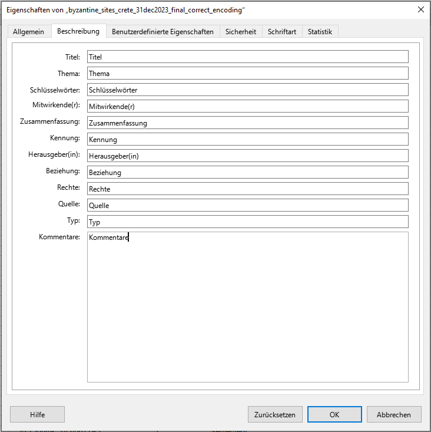

NFDI4Objects OER-Übung Metadatenmanipulation in Tabellenprogrammen
Tabellendateien in ihre Einzelteile zerlegen
Kurzbeschreibung der Inhalte der Übung.
![]()
Abstract zur Übung.
Stichwort 1, Stichwort 2
1 Praktische Bezüge
Sie wollen ein Tabellendokument mit Metadaten versehen, damit Informationen, wie bspw. Autor:innen auch für andere Forschende nachvollziehbar sind. Die übliche Vogehensweise, Metadaten innerhalb der Tabellenblätter selbst zu speichern, wollen Sie nicht anwenden, da es sich z.B. um statistische Daten handelt, die “sauber” abgelegt sein müssen. Auch ein README wollen Sie ungern verfassen, da Sie wissen, dass separat abgelegte Informationen oftmals verloren gehen und das wollen Sie vermeiden.
Voraussetzungen
Für das Verständnis dieser Übung werden vorausgesetzt:
Software:
- ein leistungsstarker Text-Editor (empfohlen: Notepad++)
- LibreOffice Calc
- Sollte LibreOffice noch nicht auf Ihrem Rechner installiert sein, holen Sie das nach.
Kompetenzen:
- Kenntnis der verschiedenen Arten von Metadaten
- Verständnis von Metadatenschemata
- XML-Grundkenntnisse oder grundlegendes Verständnis von Markup-Sprachen.
2 Datengrundlage
Ausgangspunkt der Übung ist ein Datensatz, den Vera Klontza-Jaklova und Adam Geisler Ende 2022 über die Datenplattform Pandora publiziert haben:
(Klontza-Jaklova und Geisler 2023) Klontza-Jaklova, Vera, und Adam Geisler. „SYNECDEMUS NOVUS“. Csv-file. Pandora, 12. Januar 2023. https://www.doi.org/10.48493/b8mn-4n64.
Wir arbeiten mit einem Derivat der .xls-Datei, das Sie im Ordner data finden können.
3 Vorbereitung
Bevor wir einen Blick in die Daten selbst werfen, bereiten wir eine geeignete Verzeichnis-Struktur für die Übung vor. Für eine übersichtliche Aufgabenstellung, wie in dieser Übung, bietet sich folgendes Schema an:
01_Ausgangsdaten: für alle heruntergeladenen Daten in ihrem Originalzustand inkl. Dokumentation der Datenquelle etc. in einer .md-Datei mit Links und Bemerkungen.02_Datenprodukte: für alle aus den Ausgangsdaten abgeleiteten Datensätze, die für die Auswertung benötigt werden. Anzustreben ist die Verwendung nicht-proprietärer, offener und für eine Archivierung geeigneter Datenformate.
Achten Sie darauf, dass der Verzeichnispfad keine Sonder- oder Leerzeichen enthält.
Laden Sie anschließend den vorbereiteten Datensatz in das Verzeichnis 01_Ausgangsdaten herunter:
4 Aufgabenstellungen
Wir wollen den Datensatz nun mit Metadaten versehen. Navigieren Sie dazu ins Repositorium Synecdemus Novus, aus dem der Datensatz ursprünglich stammt, und sehen Sie sich um. Welche Metadaten können Sie hier finden?
Öffnen Sie den Datensatz mit LibreCalc und navigieren Sie zu Datei > Eigenschaften. Sie sehen nun ein Fenster, in das Sie vorgegebene Metadaten zur Datei eintragen können, bspw.:
- Titel
- Mitwirkende
- Rechte
- Quelle
- etc.
{kind=link}
Tragen Sie folgende Metadaten ein:
Speichern Sie die Datei als .ods-Datei im Ordner 02_Datenprodukte ab.
{kind=link}
Schließen Sie LibreCalc. Wenn Sie jetzt die .ods-Datei wieder mit LibreCalc öffnen, finden Sie die eingetragenen Metadaten weiterhin in den Eigenschaften.
Sollten die Dateiendungen in Ihrem Explorer nicht angezeigt werden, müssen Sie unter “Ansicht” ein Häkchen bei “Dateinamenerweiterungen” setzen.
Wir wenden jetzt einen Trick an, um die soeben von uns hinterlegten Metadaten genauer zu sichten. Wie bereits oben beschrieben, handelt es sich bei .ods um ein .zip-Archiv mit XML-Dateien. Benennen Sie die .ods-Dateiendung einfach in .zip um, entpacken und öffnen Sie den Ordner.
Sie finden nun eine Datei “meta.xml” - doppelklicken Sie, um sie zu öffnen (ggf. müssen Sie einen Browser dafür auswählen). Sie sehen nun den Code, der zu den Metadaten hinterlegt ist.
{kind=link}
Wie sind die Metadaten im XML strukturiert? Was müssen wir bei der Eingabe also beachten?
Auf welches Metadatenschema beziehen sich die Angaben?
Ab Zeile 6 können wir sehen, dass es vermeintlich mehrere “publisher” des Datensatzes gibt. Dies ergibt sich daraus, dass wir im Eigenschaften-Feld in LibreOffice Calc Kommata genutzt haben, um Nach- und Vornamen von Vera Klontza-Jaklova und Adam Geisler voneinander zu trennen. Die Translation aus LibreOffice Calc versteht die Kommata als Angabe jeweils neuer “publisher”.
Das “<dc:publisher>” verweist auf den Dublin Core, der hier als Metadatenschema hinterlegt ist. Der Dublin Core ist eines der gängigsten Metadatenschemata zur Beschreibung von elektronischen Ressourcen.
Schließen Sie den Browser und öffnen Sie die Datei “meta.xml” mit Notepad++ (ggf. müssen Sie in der Ansicht einen automatischen Zeilenumbruch aktivieren).
Bereinigen Sie die Angaben zu den Herausgeber:innen.
Korrigieren Sie die Angaben, indem Sie den Vor- und Nachnamen von Vera Klontza-Jaklova zusammenführen.
<?xml version="1.0" encoding="UTF-8"?>
<office:document-meta xmlns:office="urn:oasis:names:tc:opendocument:xmlns:office:1.0" xmlns:ooo="http://openoffice.org/2004/office" xmlns:xlink="http://www.w3.org/1999/xlink" xmlns:dc="http://purl.org/dc/elements/1.1/" xmlns:meta="urn:oasis:names:tc:opendocument:xmlns:meta:1.0" xmlns:grddl="http://www.w3.org/2003/g/data-view#" office:version="1.4"><office:meta><meta:editing-cycles>1</meta:editing-cycles><meta:editing-duration>PT3M9S</meta:editing-duration><dc:publisher>Vera Klontza-Jaklova</dc:publisher><dc:publisher>Adam Geisler</dc:publisher><dc:source>https://www.doi.org/10.48493/b8mn-4n64</dc:source><dc:title>byzantine_sites_crete_31dec2022_final_correct_encoding.csv</dc:title><dc:date>2025-10-28T10:17:32.651077800</dc:date><meta:document-statistic meta:table-count="1" meta:cell-count="11890" meta:object-count="0"/><meta:generator>LibreOffice/25.2.6.2$Windows_X86_64 LibreOffice_project/729c5bfe710f5eb71ed3bbde9e06a6065e9c6c5d</meta:generator></office:meta></office:document-meta>Speichern Sie die Datei “meta.xml” ab und schließen Sie sie. Erstellen Sie aus den Dateien in Ihrem extrahierten Ordner ein neues .zip-Archiv (alle Dateien markieren –> Rechtsklick Senden an…). Benennen Sie dieses wieder in eine .ods-Datei um. Wenn Sie diese nun öffnen, finden Sie in den Eigenschaften die korrigierten Metadaten zu den Herausgeber:innen.
5 Ergebnisse
Sie haben nun Metadaten zu einem in .csv gespeicherten Datensatz angelegt und im XML manipuliert. Der Vorteil ist: Auf diese Weise können Sie Metadaten zu Tabellendaten ablegen, die innerhalb der Datei selbst gespeichert sind. Der Nachteil ist: Sie können lediglich Metadatentypen ablegen, die von .ods erlaubt werden. Sollten Sie weitere oder umfassendere Metadaten anlegen wollen, müssen Sie auf andere Wege zurück greifen.
5.1 Transferaufgabe 1
Vergleichen Sie die im Repositorium der Ursprungsdatei hinterlegten Metadaten mit den möglichen Angaben im Dublin Core
Finden Sie heraus, welche Metadatenarten in Dublin Core hinter welchem Metadatum im .odshinterlegt sind.
Hinterlegen Sie auf oben beschriebene Weise weitere Metadaten zu Ihrer Tabelle.
5.2 Lösungsvorschlag
Tragen Sie in der .ods-Datei in jedem Eigenschaftenfeld die jeweilige Bezeichnung des Eigenschaftenfelds ein und rufen Sie - wie oben beschrieben - die Datei “meta.xml” auf. Sie sehen nun, wie die jeweiligen Typen aus dem Dublin Core ins Deutsche übersetzt wurden und können Ihre Metadaten entsprechend eintragen.

Schließen Sie den Browser und öffnen Sie die Datei “meta.xml” mit Notepad++ (ggf. müssen Sie in der Ansicht einen automatischen Zeilenumbruch aktivieren).
Fügen Sie über die Datei “meta.xml” weitere relevante Metadaten hinzu. Wie werden diese nach Kompilation der Dateien zu einer .ods-Datei wohl dargestellt?
Da in der grafischen Oberfläche von LibreOffice Calc lediglich vorgegebene Eigenschaften abgebildert werden, werden Ihre zusätzlichen Metadaten nicht abgerufen. Allerdings bleiben Sie in der .xml-Datei als Metadaten erhalten und sind so - mit entsprechenden Hinweisen (z.B. in ReadMes) für die Nachnutzenden innerhalb der Datei auffindbar.
Nachnutzen
Alle sind herzlich eingeladen, diesen Baustein und die zugehörige Copyleft-Lizenz zu nutzen, um ihr Wissen und Expertise in die Verbesserung und Aktualisierung einzubringen.
Unser Wunsch ist ein lebendiges, stetig aktualisiertes Dokument, das sich durch die Beiträge vieler verändert - im Einklang mit eines sich wandelnden Umfelds. Wir freuen uns im Falle einer Überarbeitung über eine kurze Notiz – das ist aber selbstverständlich keine Pflicht.
🔗 Quarto-Quellcode dieses Bausteins
Diese Übung nutzt ein FAIR-OER-Übungs-Template von NFDI4Objects.
Disclaimer: Einsatz von LLM
Lizenz
Urheber:innen
Zitation
@misc{backhaus2026,
author = {Backhaus, Henrike},
publisher = {Institution},
title = {NFDI4Objects OER-Übung Metadatenmanipulation in
Tabellenprogrammen},
date = {2026},
url = {https://github.com/nfdi4objects/oer-template-skript},
doi = {XXXXXXX.XXXXXXX},
langid = {de},
abstract = {Abstract zur Übung.}
}